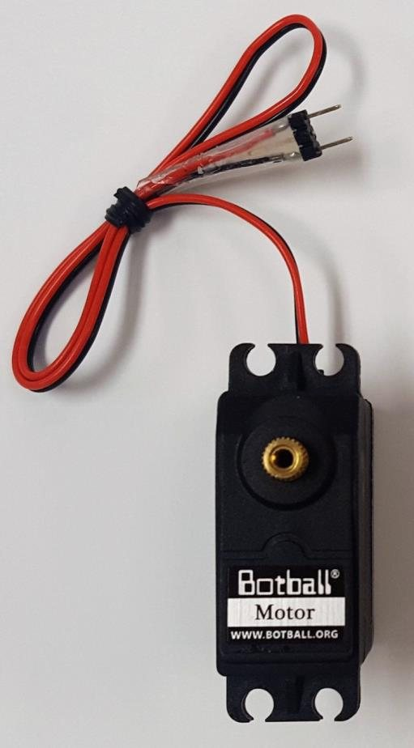
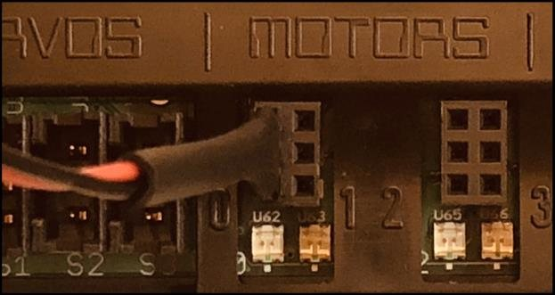
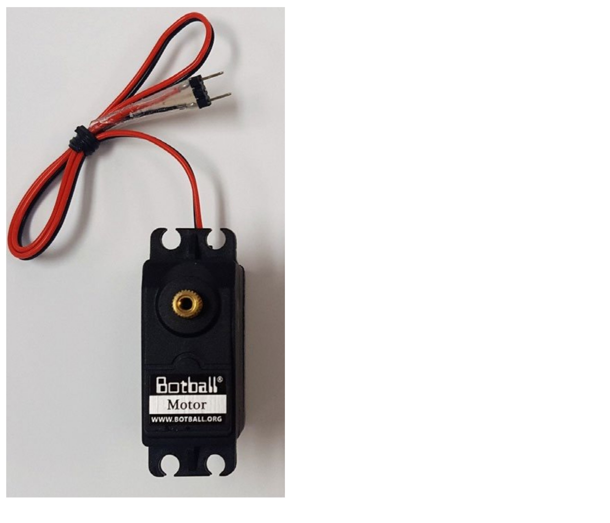

Discovery Projects · Coding · Project 3
Motors and Ports
Your robot stops talking and starts moving — with its wheels safely off the ground.
Student PIN:
⚠ Wheels Off the Ground — All Project
Put your robot on a block or a thick book so the wheels spin freely in the air. Every single thing you do in this project happens with the robot up on a block.
A robot that drives off a table lands on the floor. Do not find out.
Try It Which Way Does It Go?
Think about walking across the room. Your brain does not send one signal to "your body." It sends a signal to your left leg and a separate signal to your right leg.
The Wombat works the same way. Two motors, two wheels, two separate commands.
Find the ports
Look at the Wombat. There are four ports for motors. Two on the left, two on the right.
Counting Starts at Zero
The ports are numbered 0, 1, 2, 3 — not 1, 2, 3, 4. Computer scientists start counting at zero, and you will see this everywhere from now on. There is no port 4.
Find your motors and plug them in
A motor has a two-prong plug and a double wire — one red, one black.
Plug one motor into port 0 and the other into port 3.
The plug goes in two ways — and it matters
There is no mark on the motor plug telling you which way is right. You can put it in either way around, and the two ways do opposite things.
A motor spins in whichever direction the electricity flows through it. Flip the plug, and the wheel spins the other way.
The Wheel-Spin Trick
You do not need a program to find out which way a motor is wired. Turn the wheel with your hand and watch the little light next to that port number on the board.
Spin both wheels the direction you want the robot to drive forward. Record what you see.
| Port | LED color when I spin it forward | Do I need to flip this plug? |
|---|---|---|
| 0 | ||
| 3 |
If One Is Green and One Is Red
Unplug the red one, turn the plug 180°, and plug it back in. Spin the wheel again. Both should now be green when the wheels turn forward.
If you skip this, your robot will not drive forward — it will spin in a circle, because one wheel is going forward and the other backward.
Why does a robot spin in a circle when one motor runs forward and the other runs backward?
Learn It The motor() Command
One command runs a motor. It needs two pieces of information: which motor, and how hard.
motor(0, 50); ↑ ↑ port power
Each piece of information inside the parentheses is called an argument. printf() took one argument. motor() takes two, separated by a comma.
Remember This From Project 2?
"Too many arguments to function" was one of the errors you triggered on purpose. Now you know what an argument is — and why msleep(2,000) looked like two of them.
Power runs from −100 to 100
| Power value | What the wheel does |
|---|---|
| 100 | Full speed forward |
| 50 | About half speed forward |
| 0 | Nothing |
| −50 | About half speed backward |
| −100 | Full speed backward |
A minus sign in front of the power number reverses that motor. This is how you back up, and later, how you turn.


Which end is the front?
Your robot has two driven wheels and one small free-rolling wheel called a caster.
Before you send it anywhere, decide which end is the front — because that decides what
motor(0, 100) actually does.
Pull the Caster, Do Not Push It
A caster swivels. Pushed from behind it wanders, wobbles, and takes a moment to swing round every time you change direction. Pulled along behind the driven wheels it tracks straight.
So the driven wheels go at the front, and the caster trails.
Set your robot up so that the green power LED and the ports face forward — the same end the arm will eventually go on. That end is the front, and everything you write from now on assumes it.
⚠ Decide Now, Not Later
If half your team calls one end the front and the other half calls the other end the front, your turns will go the wrong way and nobody will be able to see why.
Agree it, and write it in your notebook: the front of our robot is the end with ___ on it.
Turning motors off
ao() stands for all off. It stops every motor at once and takes no arguments — just empty parentheses.
A stop is not instant either
ao() cuts the power. It does not grab the wheels and hold them — the robot is still
moving when that line finishes, and it coasts a little further before it truly stops.
So give it a moment to settle before you do anything else:
motor(0, 50);
motor(3, 50);
msleep(2000);
ao();
msleep(30);
msleep(30); // let it come to rest
Thirty milliseconds is not long enough to notice, and it is long enough to matter. Without it, your next command starts while the robot is still drifting — and a turn that begins mid-drift ends up somewhere you did not ask for.
From here on, every ao() in this curriculum is followed by
msleep(30). Get in the habit now.
Why you always need msleep()
Here is the thing that surprises everyone. Look at this program:
motor(0, 50); motor(3, 50); ao(); msleep(30);
The wheels will not move. Not even a twitch.
The controller turns both motors on, and then — faster than you can blink — reads the next line and turns them off again. Remember from Project 2: it moves through lines far quicker than your eye can follow.
Turning a motor on does not mean "run for a while." It means "run, starting now, until something tells you to stop." The msleep() is what gives it that while.
In your own words: what is msleep() actually doing while the motors run?
Do It Make It Turn
Robot on the block. Wheels in the air. Every time.
-
Drive the motors by hand first

The Wombat controller with its two drive motors. Before writing any code, use the Wombat's own screen. From the Home Screen, tap Motors.
Find the red line for a port and drag it left and right with your finger.
What do the wheels do as you drag?
Watch the position number for that motor. Does it change?
Remember that number. You will use it in a much later project to drive exact distances.
-
Write your first motor program
Make a new project called
Motors. Do not forget your attribution comments at the top.1 #include <kipr/wombat.h> 2 3 int main () 4 { 5 motor(0, 50); // Motor 0 on at 50% power 6 motor(3, 50); // Motor 3 on at 50% power 7 msleep(2000); // Keep them running for 2 seconds 8 ao(); msleep(30); // All off 9 return 0; 10 }
compile and run it. Watch the wheels.
Did both wheels spin the same way? If not, what does that tell you about your plugs?
-
Prove that msleep matters
Delete the
msleep(2000);line. Compile. Run.What happened?
Now put it back.
-
Prove that ao() matters
Now delete the
ao();line instead. Compile. Run. Watch carefully.What happened this time?
Put it back. Leaving motors running with no
ao()is one of the most common bugs in Botball — and on a real field it means a robot that will not stop. -
Explore power
Change both power numbers, run, and record what you notice. Keep
msleep(2000)the same every time so it is a fair test.Power What I noticed 25 50 75 100 Is power 100 exactly twice as fast as power 50? What makes you say that?
-
Go backward
Put a minus sign in front of both power numbers:
motor(0, -50); motor(3, -50);
Run it and watch the LEDs by the ports as well as the wheels.
What color are the LEDs now?
-
Make it disagree with itself
Now give the two motors opposite powers:
motor(0, 50); motor(3, -50);
Run it. The wheels are in the air, so watch what would happen on the ground.
If this robot were on the floor, what would it do?
Hold on to this. It is exactly how you will make the robot turn in Project 5.
-
Write three of your own
Write a command for each of these. Do not run them yet — just write them.
I want to... The command is Run port 0 at full power forward Run port 3 at 80% power forward Run port 1 at quarter power backward Stop everything Wait three seconds Now pick one and actually run it, to check you were right.
Score It Checkpoint
No field mission yet — that starts in Project 4. This checkpoint is about whether your motors are set up correctly and whether you can control them on purpose.
My robot's setup
Write this down. Every program you write from now on depends on it.
| Question | My answer |
|---|---|
| Which port is my left wheel in? | |
| Which port is my right wheel in? | |
| Did I have to flip either plug? | |
| What power makes a good steady speed? |
Read the code
What will this program do? Write it out before you run it.
1 motor(0, 100); 2 motor(3, 100); 3 msleep(1000); 4 motor(0, -100); 5 motor(3, -100); 6 msleep(1000); 7 ao(); msleep(30);
Now run it. Were you right? If not, what did you miss?
Can you do it again?
Think about it
A teammate says their robot "just doesn't work" — they run the program and nothing moves. Name two things you would check first, and why.
Nothing in this project told the robot how far to go — only how hard to push and for how long. Do you think that is enough to hit a target on the field? Why or why not?
Next
In Project 4 — Out and Back, the robot comes off the block and onto the field. You will drive out of the starting box, park IN THE ZONE, and drive back — and that scores a real mission.
KIPR · Botball Explorer — Discovery Projects · © KISS Institute for Practical Robotics 1997–2026